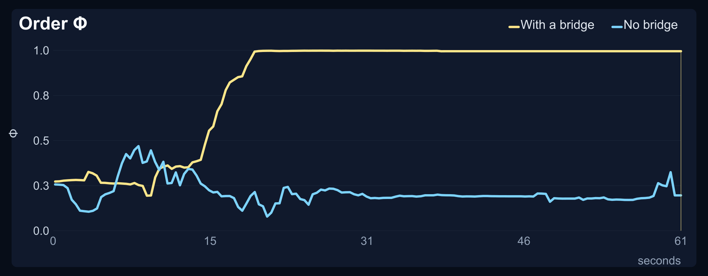
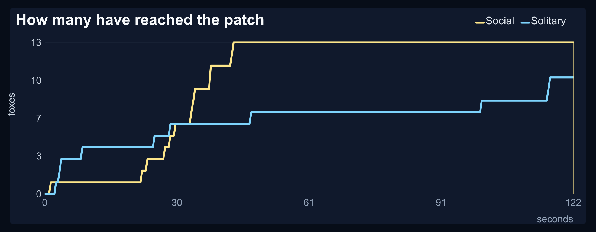
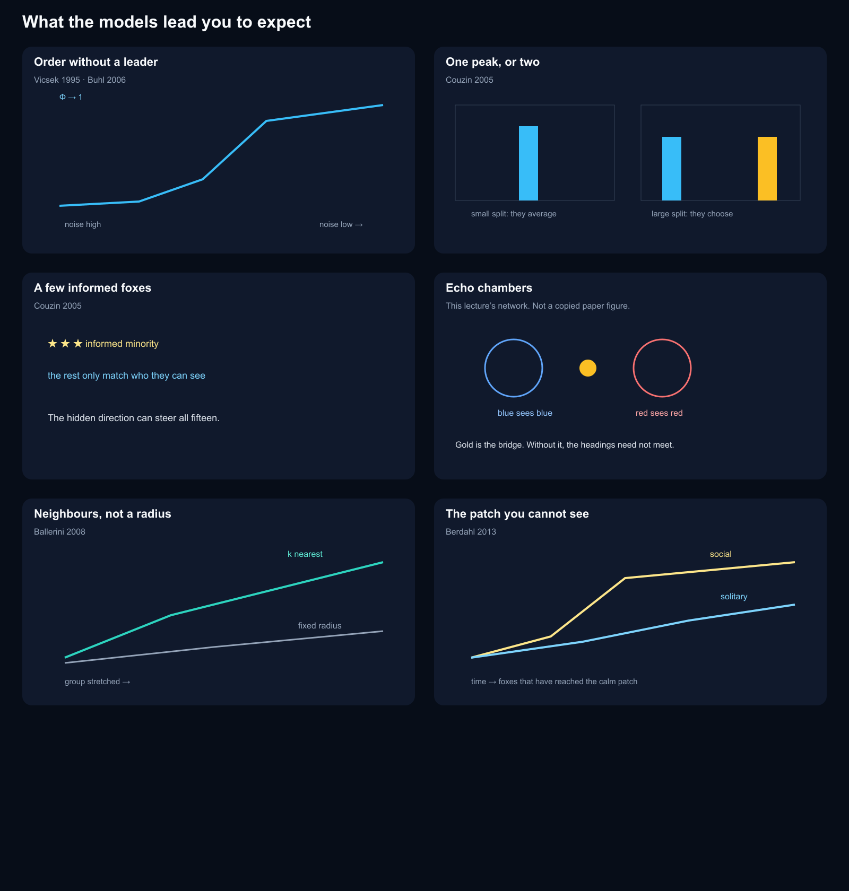
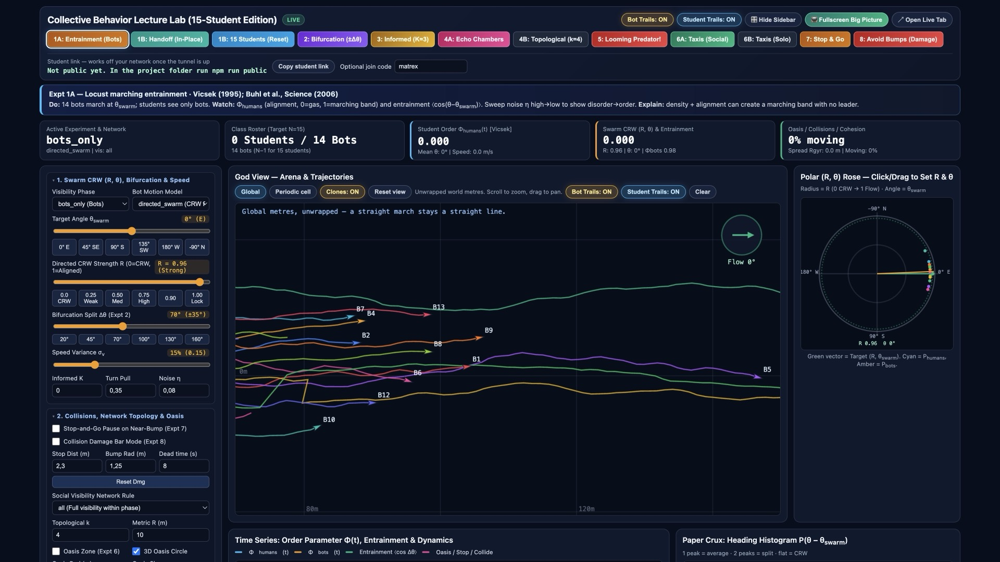
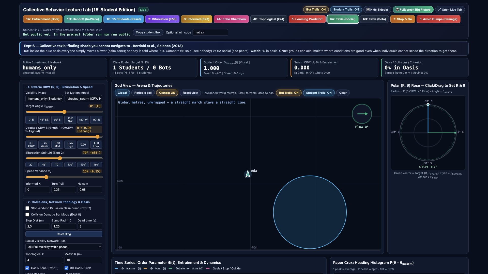
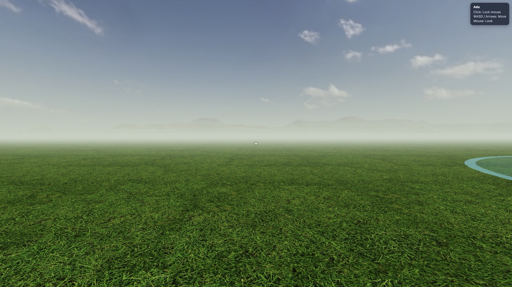

A lecture tool. Students are the animals.
Classroom collective behaviour
Fifteen people share one field. Each student is a fox. They only see the neighbours the experiment allows, and the pattern you measure afterwards is the collective behaviour: order, a split, a hidden leader, a broken network, a patch nobody was shown.
This page plays real class runs in the browser. The live lecture, where every laptop is in the same world, needs the small Node server below. GitHub Pages can only serve these files. It cannot host that shared world.
First person in the marching herd, 16 seconds at 30 frames per second. The foxes face the way they are travelling. Neckerchiefs are off in this clip. The video file is the same one.
What the class runs
1A / 1B Entrainment, then the handoff
Students first see only a marching swarm. Then the swarm vanishes and they see each other. Does the march hold?
2 Bifurcation
Two bot streams. A small angle is averaged into one heading. A large angle stays two headings.
3 Informed minority
Three students privately see a golden beacon. The others are not told the direction. A few can steer the fifteen.
4A Echo chambers
Blue sees only blue, red only red. One gold bridge sees both. Without that bridge the two headings need not meet.
4B Neighbours
Each student sees their k nearest neighbours, however far, or only those inside a fixed radius.
5 Looming
One student sees an expanding threat. The others see only that neighbour bolt.
6 The invisible patch
A calm patch slows everyone down. Social foxes can see each other. Solitary foxes can see no one. Nobody is given the location.
7 and 8 Stop-and-go, then bumps
An automatic pause just before a collision, then a mode where contact costs integrity.
Echo chambers, with a bridge and without
Blue can see only blue, red only red. The bridge take is the later one (echo chambers 2 in the class log), started at the moment the chambers are switched on, when the two colours are already on different headings. Order Φ then climbs from about 0.3 to 1 and stays there. The other panel is the no-bridge take, also started at its switch-on, and Φ stays near 0.2. The earlier bridge recording was already aligned and then jumped; it is not the one shown here.

Population order Φ. 0 is headings in every direction. 1 is one shared heading. The plot is 2200×860 pixels.
Finding a patch nobody can see
These are the last two patch takes in the class log. The recording button was pressed a few seconds before the new patch was placed, while many foxes were still inside the previous one. Both clips start after that reset, when the new 4 m patch is empty, so the search is on screen.
The curve counts how many foxes have reached the patch at least once, so it rises. Social and solitary share the same axes. Social: half the group is in by 34 seconds, and all 13 are inside by 44 seconds. Solitary: half the group by 47 seconds, and at 122 seconds only 10 of the 13 have arrived.

Foxes that have reached the invisible patch. Same clock, same vertical scale.
Scrub the same runs
Nothing you do here is uploaded. The trajectories are the saved class files, played in this tab.
Loading the class run…
What the models lead you to expect
These are schematic redraws of the shapes the dashboard sketches. They are not copies of the paper figures.

The room, from the two seats

Teacher dashboard during entrainment. The god view draws one cell. Students, on their own screens, also see the mirrored copies in the fog.

The calm patch, as the teacher sees it. Students are not given its coordinates.

The same field from a student’s eyes. The blue rim is an optional on-screen hint; the lecture can hide it.
Run it
A full class is one Node server and fifteen browsers. Node 20 or newer. On one computer you can open the student view and the dashboard together and walk through the buttons. That is a real session for a single browser, or for two tabs. It is not a substitute for fifteen laptops, and this GitHub Page cannot be that server.
git clone https://github.com/pvnkmrksk/classroom-agents.git
cd classroom-agents
npm install
npm startStudents open http://localhost:3000, type a name, and join with matrex. The lecturer opens /admin with matrexvr. From another network, npm run public prints a temporary trycloudflare.com link. That link changes every time you start it. Students use the link plus matrex. You use the same link with /admin and matrexvr.
Click to lock the mouse, WASD or arrows to move, mouse to look. Hard-refresh after you update the server. The hour-by-hour plan is LECTURE.md.
The buttons, and the papers they teach
| Button | What you measure | Source |
|---|---|---|
| 1A Entrainment | Order Φ and entrainment to the swarm heading | Vicsek et al., 1995; Buhl et al., 2006 |
| 1B Handoff | Whether Φ holds after the bots vanish | Buhl et al., 2006 |
| 2 Bifurcation | One peak in the heading histogram, or two | Couzin et al., 2005 |
| 3 Informed | Whether a silent minority steers all fifteen | Couzin et al., 2005 |
| 4A Echo chambers | One shared heading, or two that never meet | This lecture’s network. The dashboard does not cite a separate paper for it. |
| 4B Topological | Cohesion when the group is stretched | Ballerini et al., 2008 |
| 5 Looming | Whether neighbours bolt without seeing the threat | The dashboard calls it a looming, DCMD-inspired stimulus. It does not name a further paper. |
| 6A / 6B Patch | Who reaches the calm patch, and when | Berdahl et al., 2013 |
| 7 Stop and go | Pauses that move through the group | Ariel et al., 2014; Bazazi et al., 2008 |
| 8 Avoid bumps | Whether alignment appears because crossing hurts | Bazazi et al., 2008; Romanczuk et al., 2009 |
Φ is the Vicsek order parameter: the length of the average heading. The trajectories for the two comparisons above are in examples/replays/. On the dashboard they load unchecked, so they do not enter a new lecture’s average. Press Replay to watch one on the god view.
References
- Vicsek, T., Czirók, A., Ben-Jacob, E., Cohen, I. and Shochet, O. Novel type of phase transition in a system of self-driven particles. Physical Review Letters 75, 1226 (1995). doi:10.1103/PhysRevLett.75.1226
- Buhl, J., Sumpter, D. J. T., Couzin, I. D., Hale, J. J., Despland, E., Miller, E. R. and Simpson, S. J. From disorder to order in marching locusts. Science 312, 1402–1406 (2006). doi:10.1126/science.1125142
- Couzin, I. D., Krause, J., Franks, N. R. and Levin, S. A. Effective leadership and decision-making in animal groups on the move. Nature 433, 513–516 (2005). doi:10.1038/nature03236
- Ballerini, M., Cabibbo, N., Candelier, R., Cavagna, A., Cisbani, E., Giardina, I., Lecomte, V., Orlandi, A., Parisi, G., Procaccini, A., Viale, M. and Zdravkovic, V. Interaction ruling animal collective behavior depends on topological rather than metric distance. PNAS 105, 1232–1237 (2008). doi:10.1073/pnas.0711437105
- Berdahl, A., Torney, C. J., Ioannou, C. C., Faria, J. J. and Couzin, I. D. Emergent sensing of complex environments by mobile animal groups. Science 339, 574–576 (2013). doi:10.1126/science.1225883
- Ariel, G., Ophir, Y., Levi, S., Ben-Jacob, E. and Ayali, A. Individual pause-and-go motion is instrumental to the formation and maintenance of swarms of marching locust nymphs. PLOS ONE 9, e101636 (2014). doi:10.1371/journal.pone.0101636
- Bazazi, S., Buhl, J., Hale, J. J., Anstey, M. L., Sword, G. A., Simpson, S. J. and Couzin, I. D. Collective motion and cannibalism in locust migratory bands. Current Biology 18, 735–739 (2008). doi:10.1016/j.cub.2008.04.035
- Romanczuk, P., Couzin, I. D. and Schimansky-Geier, L. Collective motion due to individual escape and pursuit response. Physical Review Letters 102, 010602 (2009). doi:10.1103/PhysRevLett.102.010602